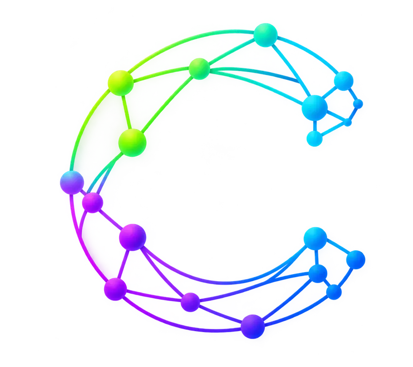

Tenés una idea
Ahora contala
Claves para crear un pitch claro y convincente


Ya hicieron mucho
Problema
↓
Personas↓
Propuesta↓
Canvas↓
Validación↓
Demo
Que se entienda
Función
↓
Beneficio
↓
Valor
¿Vamos bien?
¿Sabemos para quién?
¿Sabemos qué necesita?
¿Sabemos qué cambia?
Contalo en 60"
La estructura
Oportunidad → Persona → Idea → Demo → Nosotros → Cierre
01
Oportunidad
¿Qué vimos?
02
Persona
¿A quién le pasa?
03
Idea
¿Qué proponemos?
04
Demo
¿Cómo funciona?
05
¿Por qué ustedes?
¿Qué tiene esta idea que ustedes pueden hacer especialmente bien?
06
Cierre
¿Qué quiero que recuerdes?
El deck acompaña
Vos explicas y conectas
Pitch + Demo
Contalo Mostralo
¿Se entendió?
Preguntas
¿Por qué?
¿Para quién?
¿Cómo?
Espontáneo antes que ingenioso
Escucha · Presencia · Claridad · Confianza
Tenés una idea
Ahora contala